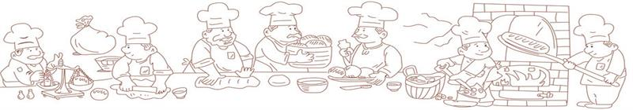

 |
|---|
| 其实，每一份烘焙都是一种感情，都在讲述一个故事。在它入口的那一瞬间，与舌尖舞出优美的华尔兹，不管开心与否，咬一口，全是温柔。 |
 |
|---|
| 你在烘焙路上奋斗了多久？不管多久，你一定也想成功。如果你已经成功，那么，问自己，还记得踏上烘焙之旅的初衷吗？ |
硬式面包（Hard Bread And Roll）：
法国面包、义大利面包、维也纳面包、荷兰脆
皮面包、祼麦面包、杂粮面包特徵：面包表皮十分松脆，内部组织却很细致。有大孔洞而少颗粒，微带韧性但不太强，很容易用手折成两段。配方：只有酵母、面粉、水、盐。有时会加少量的糖和油，颇符合现代人对健康食品的需求。
软式面包（Soft Bread）:
白土司、全麦土司、胚芽土司、各式甜土司。特徵：凡用土司模型烤出来的面包，不管配方如何都可称为软式面包。此类面包式样美观，组织细腻，质地柔软。配方：水份较一般面包多一点。且面筋必须充份扩展。
软式餐包（Soft Roll And Bun）：
小餐包、奶油餐包、牛角餐包、全麦餐包、胚芽餐包、葡萄乾餐包、硬式餐包、汉堡面包、热狗面包特徵：组织柔软可口，具有甜味。可夹馅料或涂馅料。配方：使用的糖、油用量较多，使用面粉的筋性较低。
甜面包 （Sweet Bun And Roll）：
台式的有：红豆甜面包、布丁甜面包、菠萝甜面包、沙拉面包；美式的有：花旗甜面包、各种水果面包。特徵：甜面包的面团性质十分柔软，依整形之不同，又可分为2种，一为传统台式甜面包；一为美式甜面包。台式甜面包具有鲜丽外观，香甜可口，在台湾占有很大的销售量。美式甜面包常需要冷藏後再整形。配方：通常使用上等原料，其中糖、油的用量很高，非常注重整形和装饰，可随个人创意发挥。